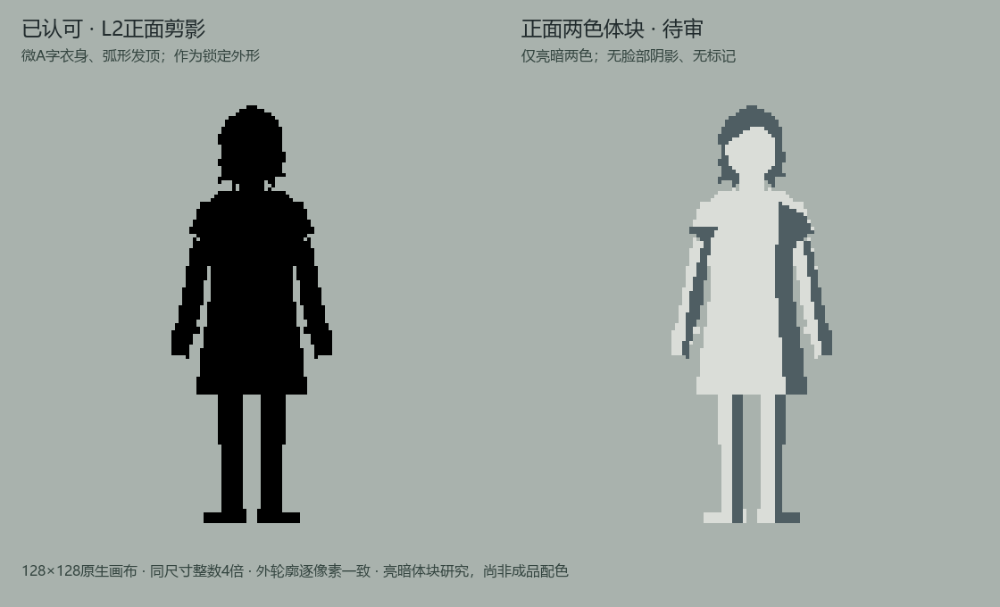
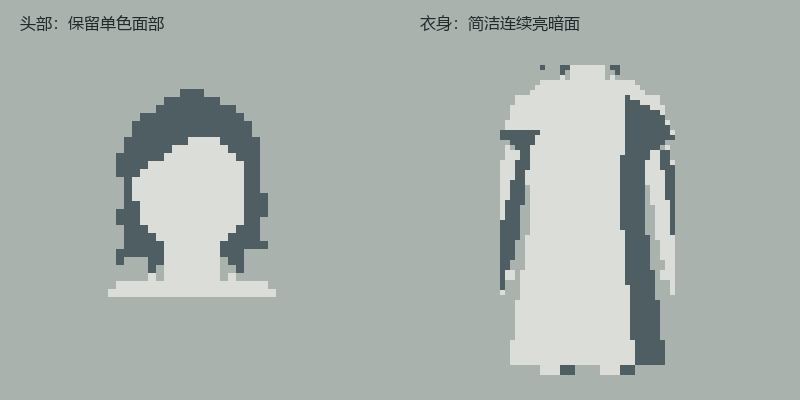

L2 正面 · 两色体块
左侧是已认可的剪影，右侧只填亮暗两个研究色。外轮廓逐像素一致，仍为原生 128×128、可见高度 117 px。
分层 Aseprite · 原生 PNG · 范围说明 · 保存回读与轮廓核验

发梢、A 字衣摆、手脚、头身和站姿全部锁定；这里只审体块，不是成品配色。

面部开口保持单色，没有眼部阴影或五官；衣身只分简单亮面和侧暗面。
原生 1:1 与整数 4 倍：
等待两色体块确认。脸部阴影、P12／腕带和阶段二服装未加入；没有侧背面、3D 或正式场景改动。